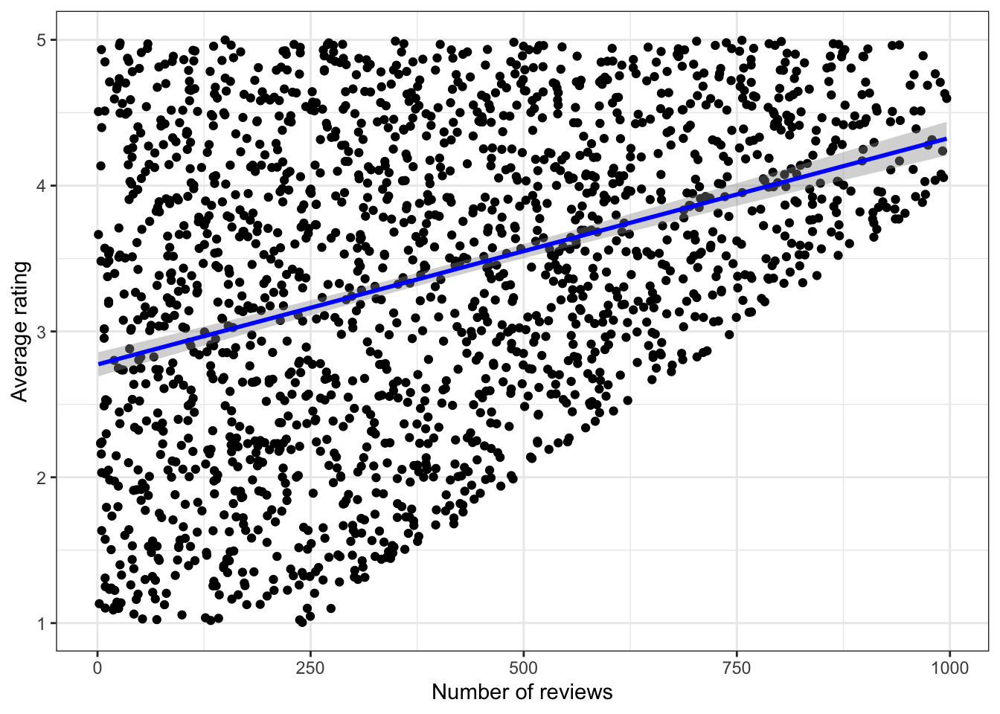

“Mama’s Too” is an amazing pizza restaurant, not far from where I live in New York City. It was recently listed as one of the best slices in the world, and I seriously recommend trying to go if you are in New York. The cacio e pepe and poached pear slices are out of this world.
Village Square Pizza is an NYC chain, that makes very good pizza, but nothing special for NYC. They have a location closer to my apartment, so I go there a bit more frequently.
On Google maps, Mama’s Too has a 4.2 average rating with 2,650 reviews, and Village Square has a 4.6 average rating, with 129 reviews. The distributions look like this:
Which restaurant is better? You already know my opinion. But what if you’re going to a new place, and you don’t know anything about either restaurant except for the Google reviews? How can you make a decision? In practice, I find this is a big issue for me when I’m traveling to a new place. Trying to figure out where to eat or which hotel or Airbnb to stay at is a big challenge. In this post I’ll discuss a variety of factors that might influence your choice when looking at reviews.
Survivorship bias
Turning to the statistical aspects of reviews, a subtle bias that can occur is survivorship bias. Survivorship bias occurs when you fail to take into account the process by which your sample came to be, overlooking the selection process that may have occurred (see Wikipedia for more).
A classic example comes from military history. During World War II, planes would return to base full of bullet holes. How could the allies reinforce their planes so that more were able to return to base? One might naively think you should reinforce the areas full of bullet holes. However the correct approach would be to reinforce the areas that were not hit. Why? The planes that were hit in those areas never returned to base at all. Only considering the survivors can bias our assessment.
In the case of restaurants, something similar occurs. Bad restaurants just close. Enough bad reviews leads to bad business. Airport restaurants and gas stations are impervious to bad reviews, so they can stay open. But in a place like New York City, with thousands of restaurants and hundreds for each cuisine, the competition leads to a survival of the fittest.
This leads to two interesting quirks.
First, it means that the high average rating of Google restaurant reviews may not be an anomaly, since the bad restaurants are closed. You can see this by simulating the process of how the data is generated. If we simulate 2500 restaurants with random reviews and random numbers of ratings, we get a big cloud. Here, number of ratings corresponds to how long a restaurant has been open. We can imagine a cutoff line in red, where below that line, restaurants close. Note that there is no relationship here between number of reviews and average rating.

Now if we remove those points below the line, we can see that there is a relationship between number of reviews and average review, shown by the sloped linear regression line in blue.

Also, the average review score went up:
| Average rating | Average survivor rating |
|---|---|
| 3.006728 | 3.385118 |
Second, it means that, in New York at least, even “average” pizza places must be pretty good just to survive and stay open. So you have a pretty good chance of having a good experience even if the reviews aren’t stellar. The flip side of this is that if a place has really bad reviews its probably best to avoid altogether.
A strange scale
Before continuing on to some statistical ways of comparing reviews, it’s worth dwelling on our scale for a moment. In my experience, 5 star systems are the most common on the internet. But other common systems are 1-10 scales, up/down votes, and 0-100 scales. Ultimately, we will need to translate our 1-5 star scale to a probability between 0 and 1 in order to make statistical estimates easier.
Note that a 1 star review is really a review of 0. You can’t give a score of 0 in most 5 star systems, so 1 is as low as you can go. So the first step to translating is to subtract 1 from the average review, so that we are now dealing with a 0-4 scale.
This is easy enough, although it does have some unintended side effects. 5/5 is still equivalent to 100%, but all of our other percentages have been pushed down: 4/5 has become 3/4 (75% instead of 80%), 3/5 has become 2/4 (50% instead of 60%), 2/5 has become 1/4 (25% instead of 40%), and 1/5 has become 0/4 (0% instead of 20%). I think this is how most people use a 5 star system anyway, with 3 stars as the midpoint and 2 and 4 midway between 3 stars and 1 and 5 respectively. But we have shifted the percentages down slightly.
This brings up an interesting point about translating reviews from their average and number of reviews or their distribution. On Google at least, you can usually get both metrics with a little digging. How do you translate from one to the other?
To go from distribution to average, you just add up the total number of stars awarded, and divide it by the total number of reviews. Here’s an example from Mama’s Too’s data:
| Star | Number of reviews | Number of stars | Total stars | Total reviews | Average review |
|---|---|---|---|---|---|
| 1 | 258 | 258 | 11060 | 2650 | 4.17 |
| 2 | 120 | 240 | 11060 | 2650 | 4.17 |
| 3 | 191 | 573 | 11060 | 2650 | 4.17 |
| 4 | 416 | 1664 | 11060 | 2650 | 4.17 |
| 5 | 1665 | 8325 | 11060 | 2650 | 4.17 |
It isn’t possible to recover the exact distribution from the average and number of ratings. You might be able to approximate it, but consider the math we just did in the table above. A single 5-star review contributes the same number of stars as five 1-star reviews. So if our average was 3 stars with 2 reviews (6 total stars), there’s no way to tell if that represents two 3-star reviews or one 1-star and one 5-star. Those situations are equivalent.
If you’re interested, here is a little tool to experiment with different distributions and the resulting average review:
#| '!! shinylive warning !!': |
#| shinylive does not work in self-contained HTML documents.
#| Please set `embed-resources: false` in your metadata.
#| standalone: true
#| viewerHeight: 600
library(shiny)
library(bslib)
library(ggplot2)
library(dplyr)
library(stringr)
ui <- page_sidebar(
sidebar = sidebar(open = "open",
numericInput("n5", "5 stars", 100,min = 0),
numericInput("n4", "4 stars", 20,min = 0),
numericInput("n3", "3 stars", 15,min = 0),
numericInput("n2", "2 stars", 10,min = 0),
numericInput("n1", "1 stars", 30,min = 0)
),
card(textOutput("text"),
plotOutput("plot",width = "auto"))
)
server <- function(input, output, session) {
data <- reactive({
data.frame(
stars = c(1,2,3,4,5),
number = c(input$n1,input$n2,input$n3,input$n4,input$n5)
) |>
mutate(number_of_stars = stars*number,
total_stars = sum(number_of_stars),
total_reviews = sum(number),
average_star = round(total_stars/total_reviews,2))
})
output$plot <- renderPlot({
data() |>
ggplot(aes(x = number, y = factor(stars))) +
geom_col(fill = "goldenrod") +
labs(x = "Number of reviews",
y = "Star rating") +
theme_bw()
}, res=140)
output$text <- renderText({
avg_review <- data() |>
pull(average_star) |>
unique()
num_reviews <-
data() |>
pull(total_reviews) |>
unique()
str_c("Average review: ", avg_review, " with " , num_reviews, " reviews")
})
}
shinyApp(ui = ui, server = server)Statistical comparison
There is a great video by 3Blue1Brown on this topic, which I highly recommend. Some of these techniques are adapted from that video.
The first statistical technique for dealing with reviews comes from the world of coin flips and binomial distributions. Essentially, you treat the “true” underlying score as existing on a 0-1 scale. Then you treat each review as an independent draw from the binomial probability distribution. With the average and number of reviews, we can construct a confidence interval for the “true” score, and then compare confidence intervals between two restaurants with different numbers of reviews.
If you’re not used to statistical terminology, don’t be intimidated. The simple version of this is if we were to flip a coin 1000 times and got 600 heads and 400 tails, we are just trying to estimate the probability that the “true” probability for this coin is 60% heads and 40% tails.
The second technique (also outlined in the video) is called Laplace’s Rule of Succession, or simply Laplace’s technique. The idea is to take your current number of stars and reviews, and add 1 more negative review and 1 more positive review, and then calculate a new average. In the 5 star case, this is equivalent to adding 6 stars and 2 reviews to our totals.
The third technique is called Bayesian Averaging. The idea here is to start with some prior belief about what the average score is. This could be the average for the platform, or for the type of establishment (e.g. pizza restaurants on Google). We also take into account the average number of reviews for the same, so that we have a sense of whether our restaurant is above or below the average. Then we combine this knowledge with the number of stars and reviews for our given restaurant to get an updated estimate of the true average (called the “posterior”).
Actually Laplace’s technique, while an easy and convenient trick, is simply Bayesian average where the average prior review is 50% and the average number of reviews is 2.
Finally, the most complicated technique is called empirical Bayes estimation (some more details at this blog post). Under the hood, this leverages special properties of the Beta distribution and Bayes theorem to improve our estimate beyond Bayesian averaging. It requires either having a lot of data, or estimating a prior distribution manually, which is what we’ll do in this case.
Below is a small app that allows you to test out all 4 of these different methods. You need the average rating and number of reviews for all methods. The two Bayesian methods also need some information on your “prior” assumptions. For Bayesian averaging, you need the prior average rating and number of reviews. For empirical Bayes estimation, you need to specify the alpha and beta values for the Beta distribution. For convenience, I have displayed the specified distribution and its mean and standard deviation to help with setting up the distribution.
#| '!! shinylive warning !!': |
#| shinylive does not work in self-contained HTML documents.
#| Please set `embed-resources: false` in your metadata.
#| standalone: true
#| viewerHeight: 600
library(shiny)
library(bslib)
library(ggplot2)
library(dplyr)
library(stringr)
ui <- page_sidebar(
sidebar = sidebar(open = "open",
numericInput("avg_stars", "Star Rating", 4,
min = 1, max = 5, step = 0.1),
numericInput("num_reviews", "Number of reviews", 250,
min = 0, step = 1),
numericInput("prior_stars", "Prior average rating (Bayesian average)", 3.5,
min = 1, max = 5, step = 0.1),
numericInput("prior_num", "Prior number of reviews (Bayesian average)", 200),
numericInput("alpha", "Alpha (empirical Bayes)", 3,
step = 0.1,
min = 0),
numericInput("beta", "Beta (empirical Bayes)",1.5,
step = 0.1,
min = 0)
),
navset_card_tab(
nav_panel(title = "Comparison",
plotOutput("comparison_plot")),
nav_panel(title = "Binomial CI",
textOutput("binom_text")),
nav_panel(title = "Laplace",
textOutput("laplace_text")),
nav_panel(title = "Bayesian Average",
textOutput("bayes_avg_text")),
nav_panel(title = "Empirical Bayes",
textOutput("beta_prior_text"),
plotOutput("beta_dist"), br(),
textOutput("beta_est"))
)
)
server <- function(input, output, session) {
binom_est <- reactive({
p = (input$avg_stars - 1) / 4
high_ci = 1+4*qbinom(p = 0.975,size = input$num_reviews,prob=p)/input$num_reviews
low_ci = 1+4*qbinom(p = 0.025,size = input$num_reviews,prob=p)/input$num_reviews
return(c(input$avg_stars,low_ci, high_ci))
})
output$binom_text <- renderText({
str_c("Mean: ", binom_est()[1],", 95% CI: ",round(binom_est()[2],3),"-",round(binom_est()[3],3), " stars")
})
laplace_est <- reactive({
total_stars = (input$avg_stars - 1) * input$num_reviews
laplace_est = 1 + ((total_stars + 4) / (input$num_reviews + 2))
return(laplace_est)
})
output$laplace_text <- renderText({
str_c("Laplace estimate: ", round(laplace_est(),3), " stars")
})
bayes_avg <- reactive({
bayes_est <- 1 + ((input$prior_num*(input$prior_stars-1))+
((input$avg_stars-1) * input$num_reviews))/(input$prior_num + input$num_reviews)
bayes_est
})
output$bayes_avg_text <- renderText({
str_c("Bayesian average: ", round(bayes_avg(),3), " stars")
})
output$beta_prior_text <- renderText({
alpha <- input$alpha
beta <- input$beta
beta_mean <- 1 + (4 * alpha / (alpha+beta))
str_c("Beta prior mean: ", round(beta_mean,3), " stars")
})
output$beta_dist <- renderPlot({
x <- seq(0, 1, length.out = 100)
y <- dbeta(x, input$alpha, input$beta)
rand_data = data.frame(points = 1 + (4*rbeta(1000, input$alpha, input$beta))) |>
mutate(bin = case_when(points < 1.5 ~ 1,
points >= 1.5 & points < 2.5 ~ 2,
points >= 2.5 & points < 3.5 ~ 3,
points >= 3.5 & points < 4.5 ~ 4,
points >= 4.5~ 5)) |>
summarize(.by = bin,
n =n())
data.frame(x = x, y = y) |>
mutate(x = 1 + (x*4)) |>
ggplot() +
geom_line(aes(x = x, y = y)) +
# geom_col(data = rand_data,
# aes(x = bin, y = n/1000),
# alpha = 0.5) +
labs(title = paste("Beta Distribution (alpha =", input$alpha, ", beta =", input$beta, ")"),
x = "Star value", y = "Density")
})
beta_est <- reactive({
adj_total_stars = (input$avg_stars - 1) * input$num_reviews
estimate = 1 + ((adj_total_stars + input$alpha) / (input$num_reviews + input$alpha + input$beta))
return(estimate)
})
output$beta_est <- renderText({
str_c("Empirical Bayes estimate: ", round(beta_est(), 3), " stars")
})
output$comparison_plot <- renderPlot({
data <- data.frame(method = factor(c("Binomial CI","Laplace","Bayesian Average","Empirical Bayes"),
levels = c("Binomial CI","Laplace","Bayesian Average","Empirical Bayes")),
value = c(binom_est()[1], laplace_est(), bayes_avg(), beta_est()),
low_ci = c(binom_est()[2],NA,NA,NA),
high_ci = c(binom_est()[3],NA,NA,NA)
)
data |>
ggplot(aes(x = value, y = forcats::fct_rev(method))) +
geom_errorbar(aes(xmin = low_ci, xmax = high_ci),
width = 0.2) +
geom_point(color = "goldenrod") +
theme_bw(base_size = 12) +
labs(x = "Star Estimate",y = "Method") +
xlim(1,5)
})
}
shinyApp(ui = ui, server = server)Ultimately, these estimates have a lot of caveats because of the social factors discussed above. In my real life experience, word of mouth is usually the best indicator of a restaurant’s quality, and a place having thousands of reviews is an indicator that at the very least, it is popular and been around a long time. You’ll just have to visit to decide if it’s worth 5 stars.

Social factors
Obviously, a lot goes into reviews like this. Unlike a survey, reviews are inherently very biased. Here are a few things that go into that bias:
Self selecting reviewers. The people who choose to review a restaurant are not a random sample. Personally, I have only left reviews when its either highly encouraged by the platform (like Airbnb) or if the owner specifically asks for my review (like at my dentists office). But many people have a hobby of reviewing places, and there are even special platforms (like Beli for restaurants) that cater to people who like reviewing things as an activity in itself. On the other end of the spectrum, some people only leave a review if their experience is negative and they are trying to warn people or get compensated. Speaking of…
Polarized reviews. As you can see from the distribution for Village Square above, people are like to leave 5 stars as a baseline (like with Uber/Lyft rides), or to leave 1 star if something bad happened, like slow or rude service at a restaurant with otherwise good food. This leads to polarized reviews, where there are few 2-4 star ratings that may be more “objective.”
Different platforms. Reviews and reviewers on Google may vary a lot compared to Yelp or other sites. In fact, the average review on Google may be around 4.2 compared to 3.5 on Yelp. This can also vary widely by industry and city. For example I have noticed that the average ratings of restaurants at airports and at gas stations are always very low. Those places just don’t get good reviews much, so an “above average” airport restaurant may have a lower review than a regular restaurant. I also find this a challenge when comparing hotels, which may have reviews on multiple different platforms (e.g. Expedia, hotels.com, booking.com, kayak, Google, etc.) that can be hard to compare.
Early vs. late adopters. The first customers as a restaurant may be friends or enthusiasts more likely to give high reviews.
Viral trends. Related, if a restaurant gains popularity for being viral, things can get weird. Tourists coming to get the viral food may be extra lenient, while others may be extra critical in response to the hype. Furthermore this population differs from “in the know” locals, who may know good spots that receive less attention.
Differing preferences. Everyone looks for different things in writing and reading reviews. Some people may give qualified reviews that are influenced by their own perspectives. A common one I see living in New York is people giving a negative review, and writing that a place is “good but too expensive.” Cleanliness, wait times, uniqueness, and differing palates can all change how you interpret reviews.